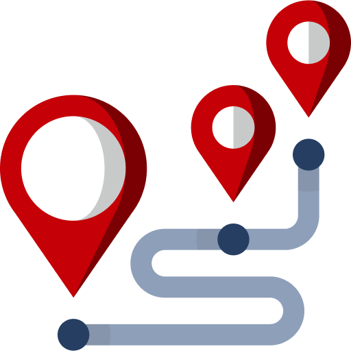

В общей сложности с учётом отцепки и прицепки вагонов поезд доставляет в регионы 84 крупнотоннажных контейнера с почтовыми и коммерческими грузами.
23.05.2022 ОАО «РЖД» и Почта России отправили первый почтовый контейнерный поезд «Россия» по маршруту Москва — Владивосток
Особенность поезда — специально разработанное расписание и технология, которые дают возможность отцепки и прицепки фитинговых платформ с контейнерами на станциях крупных городов вдоль Транссиба.

По пути следования поезд сделает 8 остановок в крупнейших городах: Казань, Екатеринбург, Тюмень, Омск, Новосибирск, Красноярск, Иркутск и Хабаровск.
В общей сложности с учётом отцепки и прицепки вагонов поезд доставляет в регионы 84 крупнотоннажных контейнера с почтовыми и коммерческими грузами.
Среди клиентов — крупнейшие ритейлеры и производители: Детский мир, Лента, Спортмастер, М.Видео и многие другие. В составе поезда также проследуют контейнеры с автомобилями Почты России, конечная точка доставки — Петропавловск-Камчатский.